Candidate List 20260512 Previous Day Next Day Section 1: New Sources (age<1d) Cosmological Afterglow
Section 2: Old (1-5d) sources observed last night placeholder
Section 1: New Afterglow/FBOT Cands Last Night (1)
1. ZTF26aawfdna (Afterglow?) [Back to Top] [Share] [Trigger Swift] [Fritz ] [Lasair ]RA, Dec: 212.31908, 76.64907 14h 9m16.58s, 76d38m56.65sGalactic (l, b): 117.20196, 39.60061 ext(g-r) = 0.037PS1: 1 source in 3 arcsec Closest: d = 1.15 arcsec photoz=0.09+/-0.01 peak abs mag = -18.89 Consistent with synchrotron, g-r>0!
Section 2: Older Sources Observed Last Night (23)
0. ZTF26aauvzgh (Afterglow?) [Back to Top] [Share] [Trigger Swift] [Fritz ] [Lasair ]RA, Dec: 209.79567, 47.25993 13h59m10.96s, 47d15m35.75sGalactic (l, b): 93.99559, 65.8823 ext(g-r) = 0.021peak abs mag = -19.10 PS1: 1 source in 3 arcsec Closest: d = 0.45 arcsec photoz=0.11+/-0.02 peak abs mag = -18.91
1. ZTF26aavbsku (FBOT?) [Back to Top] [Share] [Trigger Swift] [Fritz ] [Lasair ]RA, Dec: 207.18185, 26.45666 13h48m43.64s, 26d27m23.97sGalactic (l, b): 33.18205, 77.20449 ext(g-r) = 0.013peak abs mag = -19.72 LegacySurvey: 1 sources in 3 arcsec Closest: d = 1.03 arcsec, 221.3 deg (east of north) photoz=0.16 (68% bounds 0.12, 0.2), type=REX peak abs mag = -19.25 (68% bounds -18.58, -19.83) Consistent with synchrotron, g-r>0!
2. ZTF26aavebdl (Afterglow?) [Back to Top] [Share] [Trigger Swift] [Fritz ] [Lasair ]RA, Dec: 212.51889, -6.04343 14h10m4.53s, -6d-2m-36.36sGalactic (l, b): 335.65246, 51.76185 ext(g-r) = 0.035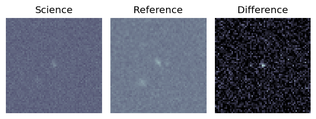
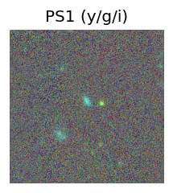
LegacySurvey: 1 sources in 3 arcsec Closest: d = 1.65 arcsec, 2.7 deg (east of north) photoz=0.11 (68% bounds 0.07, 0.16), type=SER peak abs mag = -18.59 (68% bounds -17.62, -19.49) 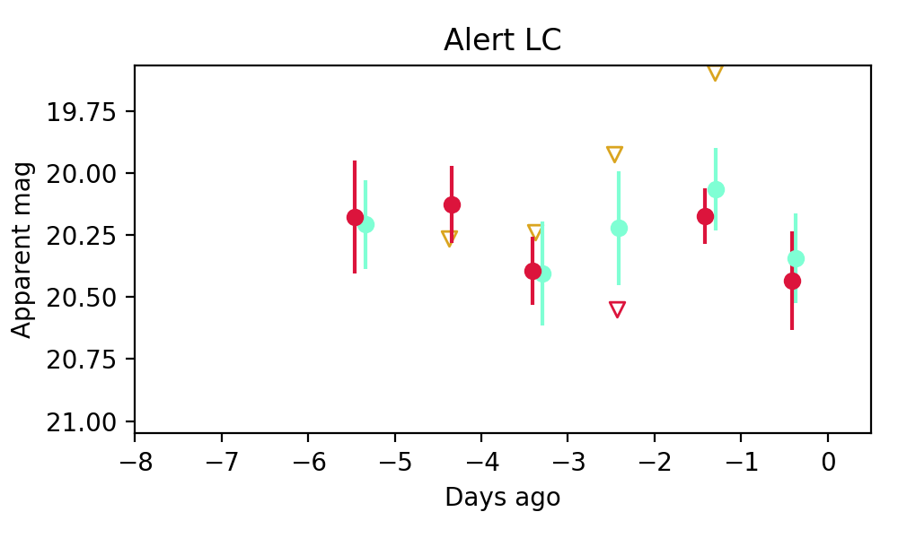
Consistent with synchrotron, g-r>0!
3. ZTF26aavedji (FBOT?) [Back to Top] [Share] [Trigger Swift] [Fritz ] [Lasair ]RA, Dec: 209.30404, -17.25626 13h57m12.97s, -17d-15m-22.53sGalactic (l, b): 324.56518, 42.83542 WARNING: -4.95 deg from ecliptic plane ext(g-r) = 0.089LegacySurvey: 1 sources in 3 arcsec Closest: d = 0.47 arcsec, 276.0 deg (east of north) photoz=0.11 (68% bounds 0.1, 0.13), type=SER peak abs mag = -19.71 (68% bounds -19.37, -19.99) Consistent with synchrotron, g-r>0!
4. ZTF26aaveyho (Afterglow?) [Back to Top] [Share] [Trigger Swift] [Fritz ] [Lasair ]RA, Dec: 233.98178, 8.73671 15h35m55.63s, 8d44m12.14sGalactic (l, b): 15.48241, 47.04732 ext(g-r) = 0.044peak abs mag = -17.02
5. ZTF26aavfcak (Afterglow?) [Back to Top] [Share] [Trigger Swift] [Fritz ] [Lasair ]RA, Dec: 284.30036, -8.97569 18h57m12.09s, -8d-58m-32.47sGalactic (l, b): 25.57302, -5.35035 ext(g-r) = 0.412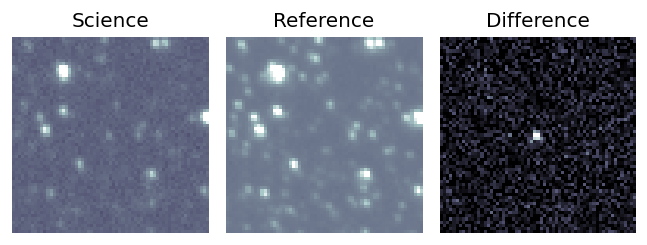
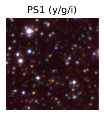
PS1: 1 source in 3 arcsec Closest: d = 4.20 arcsec photoz=1.07+/-0.21 peak abs mag = -26.59 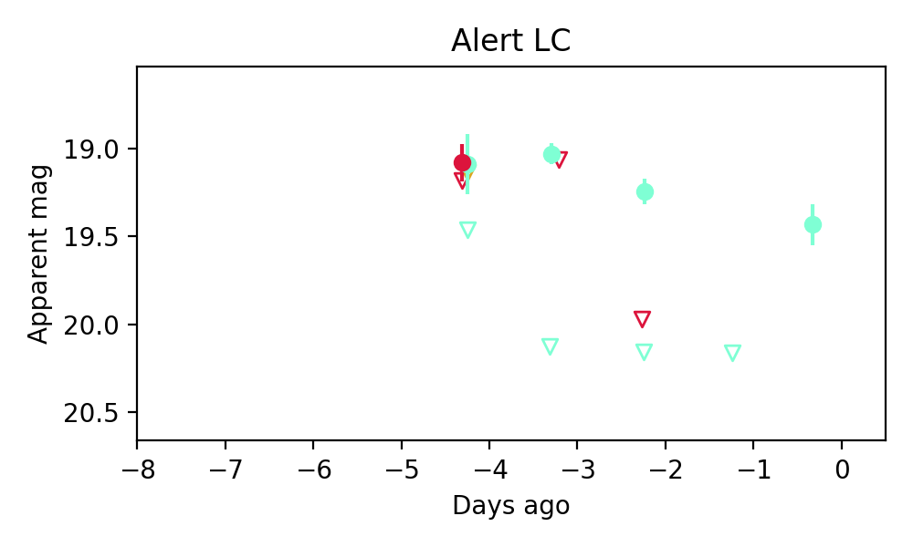
6. ZTF26aavguzr (Afterglow?) [Back to Top] [Share] [Trigger Swift] [Fritz ] [Lasair ]RA, Dec: 209.91639, 5.83765 13h59m39.93s, 5d50m15.53sGalactic (l, b): 343.30874, 63.22808 ext(g-r) = 0.031peak abs mag = -19.18 peak abs mag = -18.89 LegacySurvey: 1 sources in 3 arcsec Closest: d = 2.27 arcsec, 70.0 deg (east of north) photoz=0.1 (68% bounds 0.08, 0.11), type=SER peak abs mag = -19.19 (68% bounds -18.81, -19.51)
7. ZTF26aavilqo (Afterglow?) [Back to Top] [Share] [Trigger Swift] [Fritz ] [Lasair ]RA, Dec: 225.20981, 1.33864 15h 0m50.36s, 1d20m19.09sGalactic (l, b): 358.67597, 49.66757 ext(g-r) = 0.054peak abs mag = -17.79 LegacySurvey: 1 sources in 3 arcsec Closest: d = 4.51 arcsec, 137.5 deg (east of north) photoz=0.03 (68% bounds 0.02, 0.03), type=SER peak abs mag = -17.28 (68% bounds -16.84, -17.69)
8. ZTF26aavktva (Afterglow?FBOT?) [Back to Top] [Share] [Trigger Swift] [Fritz ] [Lasair ]RA, Dec: 233.88066, 8.96581 15h35m31.36s, 8d57m56.92sGalactic (l, b): 15.69702, 47.25022 ext(g-r) = 0.041peak abs mag = -19.62 LegacySurvey: 1 sources in 3 arcsec Closest: d = 0.63 arcsec, 166.7 deg (east of north) photoz=0.13 (68% bounds 0.11, 0.13), type=SER peak abs mag = -19.72 (68% bounds -19.52, -19.88) Consistent with synchrotron, g-r>0!
9. ZTF26aavlhox (FBOT?) [Back to Top] [Share] [Trigger Swift] [Fritz ] [Lasair ]RA, Dec: 245.61541, 9.58425 16h22m27.70s, 9d35m3.30sGalactic (l, b): 23.95974, 37.37528 ext(g-r) = 0.053peak abs mag = -20.52 LegacySurvey: 1 sources in 3 arcsec Closest: d = 2.33 arcsec, 267.0 deg (east of north) photoz=0.16 (68% bounds 0.13, 0.2), type=SER peak abs mag = -19.49 (68% bounds -18.95, -20.08) Consistent with synchrotron, g-r>0!
10. ZTF26aavqbzd (FBOT?) [Back to Top] [Share] [Trigger Swift] [Fritz ] [Lasair ]RA, Dec: 206.76805, -1.72251 13h47m4.33s, -1d-43m-21.03sGalactic (l, b): 330.04933, 58.18963 ext(g-r) = 0.044peak abs mag = -20.34 LegacySurvey: 1 sources in 3 arcsec Closest: d = 0.40 arcsec, 292.0 deg (east of north) photoz=0.14 (68% bounds 0.12, 0.19), type=SER peak abs mag = -19.46 (68% bounds -18.97, -20.16) Consistent with synchrotron, g-r>0!
11. ZTF26aavqdbg (Afterglow?) [Back to Top] [Share] [Trigger Swift] [Fritz ] [Lasair ]RA, Dec: 203.39262, -20.63455 13h33m34.23s, -20d-38m-4.38sGalactic (l, b): 316.0661, 41.1602 ext(g-r) = 0.087
12. ZTF26aavrsod (Afterglow?) [Back to Top] [Share] [Trigger Swift] [Fritz ] [Lasair ]RA, Dec: 242.92378, -24.06626 16h11m41.71s, -24d-3m-58.53sGalactic (l, b): 350.94051, 19.61509 WARNING: -2.91 deg from ecliptic plane ext(g-r) = 0.27
13. ZTF26aavrvex (FBOT?) [Back to Top] [Share] [Trigger Swift] [Fritz ] [Lasair ]RA, Dec: 230.06446, 1.52622 15h20m15.47s, 1d31m34.40sGalactic (l, b): 3.62156, 46.11633 ext(g-r) = 0.054peak abs mag = -19.54 LegacySurvey: 1 sources in 3 arcsec Closest: d = 0.42 arcsec, 235.3 deg (east of north) photoz=0.1 (68% bounds 0.1, 0.11), type=SER peak abs mag = -18.67 (68% bounds -18.49, -18.85)
14. ZTF26aawampy (Afterglow?) [Back to Top] [Share] [Trigger Swift] [Fritz ] [Lasair ]RA, Dec: 231.03995, 8.68082 15h24m9.59s, 8d40m50.94sGalactic (l, b): 13.13131, 49.49931 ext(g-r) = 0.036peak abs mag = -17.66 LegacySurvey: 1 sources in 3 arcsec Closest: d = 1.85 arcsec, 248.7 deg (east of north) photoz=0.04 (68% bounds 0.03, 0.05), type=SER peak abs mag = -17.52 (68% bounds -16.86, -17.91) Consistent with synchrotron, g-r>0!
15. ZTF26aawcshf (Afterglow?) [Back to Top] [Share] [Trigger Swift] [Fritz ] [Lasair ]RA, Dec: 251.13188, -27.25509 16h44m31.65s, -27d-15m-18.33sGalactic (l, b): 353.54756, 11.96106 WARNING: -4.91 deg from ecliptic plane ext(g-r) = 0.351
16. ZTF26aawfdbg (FBOT?) [Back to Top] [Share] [Trigger Swift] [Fritz ] [Lasair ]RA, Dec: 203.10541, 45.48987 13h32m25.30s, 45d29m23.52sGalactic (l, b): 101.64905, 69.90729 ext(g-r) = 0.017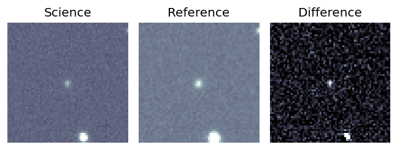
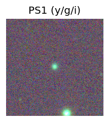
peak abs mag = -20.13 PS1: 1 source in 3 arcsec Closest: d = 0.42 arcsec photoz=0.22+/-0.04 peak abs mag = -19.96 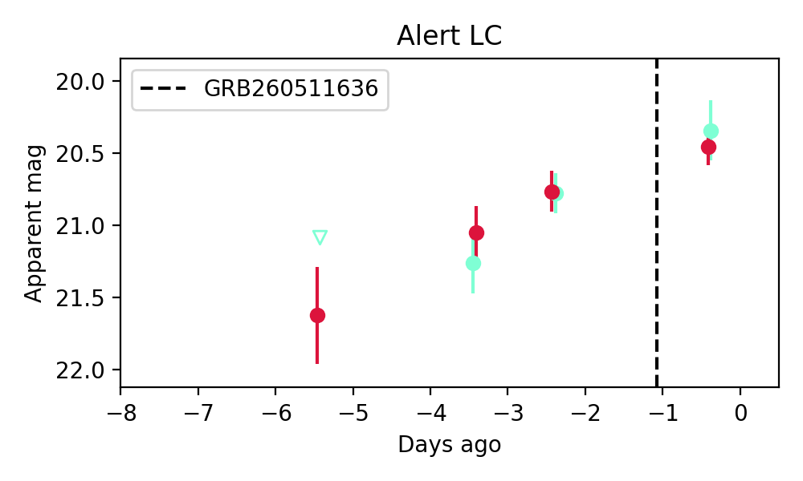
Consistent with synchrotron, g-r>0!
17. ZTF26aawfedw (Afterglow?) [Back to Top] [Share] [Trigger Swift] [Fritz ] [Lasair ]RA, Dec: 233.77168, 13.19581 15h35m5.20s, 13d11m44.91sGalactic (l, b): 21.2073, 49.36814 ext(g-r) = 0.042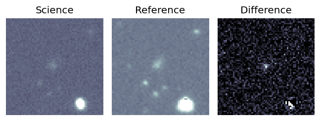
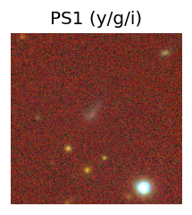
peak abs mag = -17.88 LegacySurvey: 1 sources in 3 arcsec Closest: d = 2.16 arcsec, 46.6 deg (east of north) photoz=0.03 (68% bounds 0.02, 0.04), type=SER peak abs mag = -15.58 (68% bounds -14.6, -16.64) 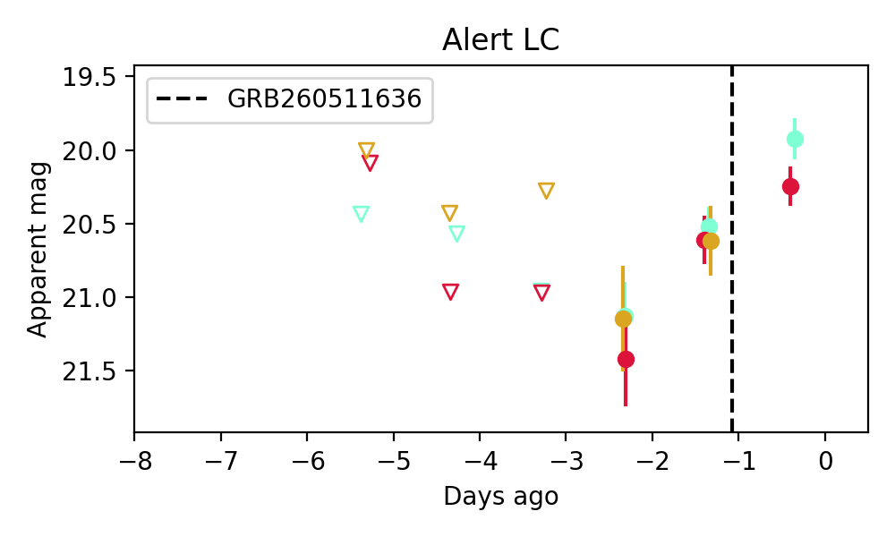
Consistent with synchrotron, g-r>0!
18. ZTF26aawfnjg (FBOT?) [Back to Top] [Share] [Trigger Swift] [Fritz ] [Lasair ]RA, Dec: 204.17665, 47.07679 13h36m42.40s, 47d 4m36.44sGalactic (l, b): 101.88017, 68.15816 ext(g-r) = 0.02peak abs mag = -20.36 PS1: 1 source in 3 arcsec Closest: d = 0.17 arcsec photoz=0.33+/-0.13 peak abs mag = -20.73
19. ZTF26aawfzhf (FBOT?) [Back to Top] [Share] [Trigger Swift] [Fritz ] [Lasair ]RA, Dec: 238.27177, 29.16612 15h53m5.23s, 29d 9m58.02sGalactic (l, b): 46.85924, 50.15477 ext(g-r) = 0.039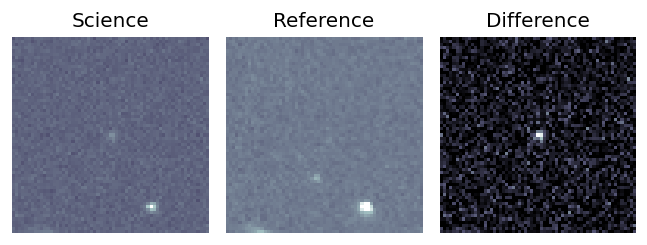
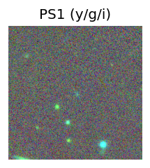
peak abs mag = -22.80 LegacySurvey: 1 sources in 3 arcsec Closest: d = 1.31 arcsec, 211.8 deg (east of north) photoz=0.78 (68% bounds 0.37, 0.91), type=REX peak abs mag = -23.13 (68% bounds -21.19, -23.53) 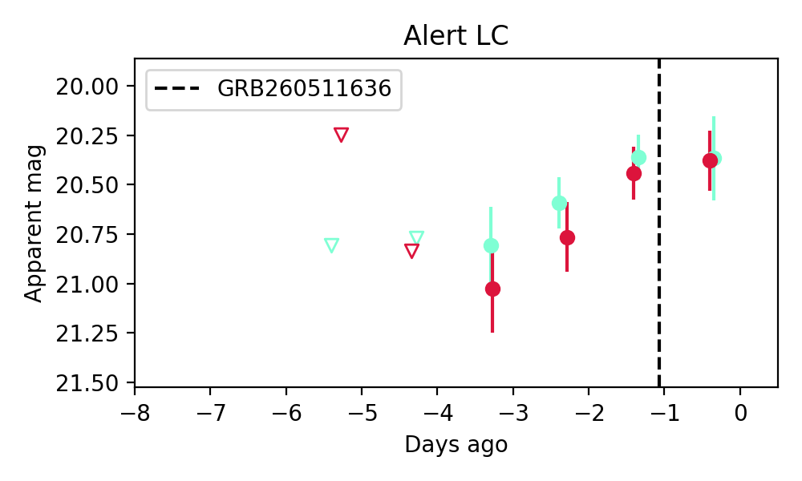
Consistent with synchrotron, g-r>0!
20. ZTF26aawgiev (FBOT?) [Back to Top] [Share] [Trigger Swift] [Fritz ] [Lasair ]RA, Dec: 296.19673, 46.87402 19h44m47.21s, 46d52m26.48sGalactic (l, b): 80.25694, 11.09601 ext(g-r) = 0.123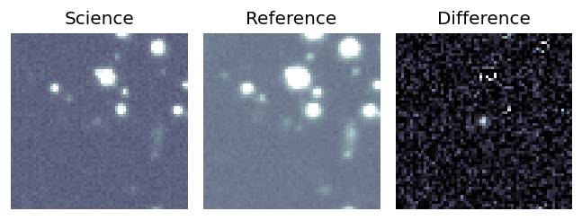
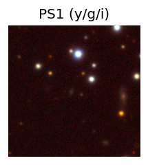
PS1: 1 source in 3 arcsec Closest: d = 1.41 arcsec photoz=0.38+/-0.06 peak abs mag = -21.46 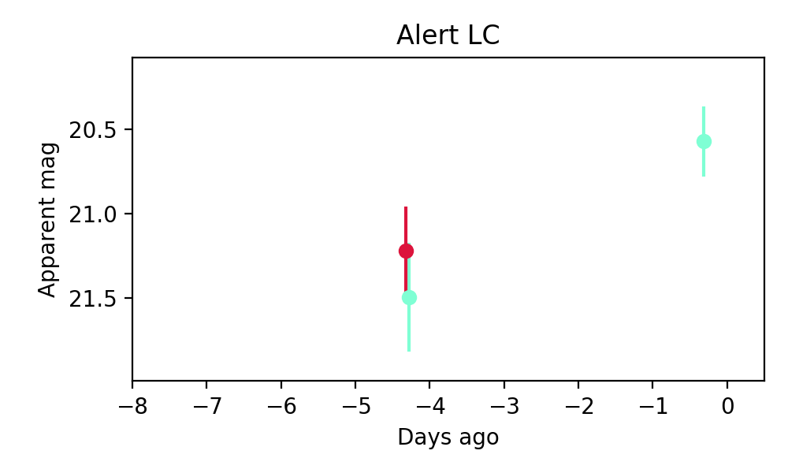
Consistent with synchrotron, g-r>0!
21. ZTF26aawgrhd (FBOT?) [Back to Top] [Share] [Trigger Swift] [Fritz ] [Lasair ]RA, Dec: 247.14796, 2.90032 16h28m35.51s, 2d54m1.17sGalactic (l, b): 17.70147, 32.81285 ext(g-r) = 0.071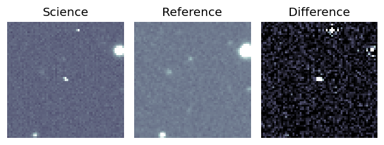
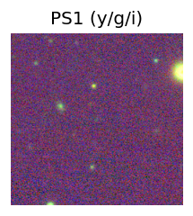
LegacySurvey: 1 sources in 3 arcsec Closest: d = 0.74 arcsec, 145.8 deg (east of north) photoz=0.55 (68% bounds 0.47, 0.65), type=EXP peak abs mag = -24.04 (68% bounds -23.66, -24.47) 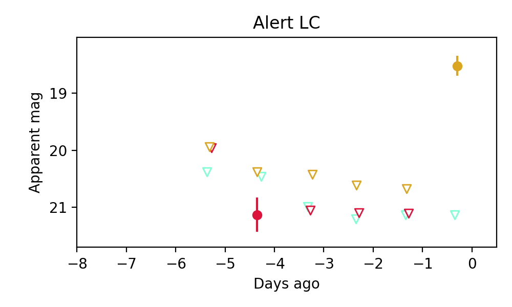
22. ZTF26aawguga (FBOT?) [Back to Top] [Share] [Trigger Swift] [Fritz ] [Lasair ]RA, Dec: 273.0167, 5.29317 18h12m4.01s, 5d17m35.41sGalactic (l, b): 33.19398, 11.16037 ext(g-r) = 0.219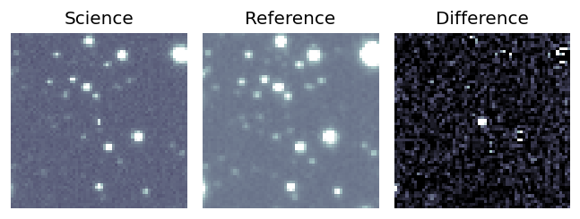
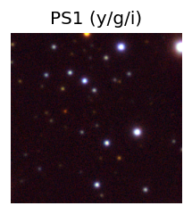
PS1: 1 source in 3 arcsec Closest: d = 2.07 arcsec photoz=0.24+/-0.07 peak abs mag = -22.01 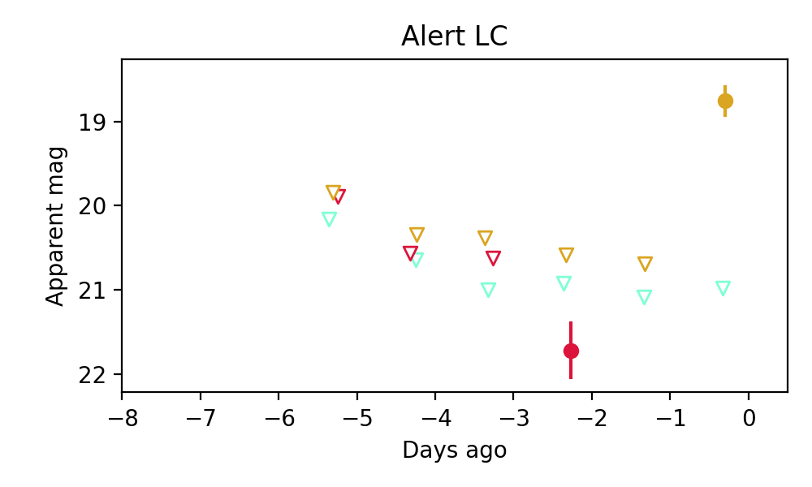